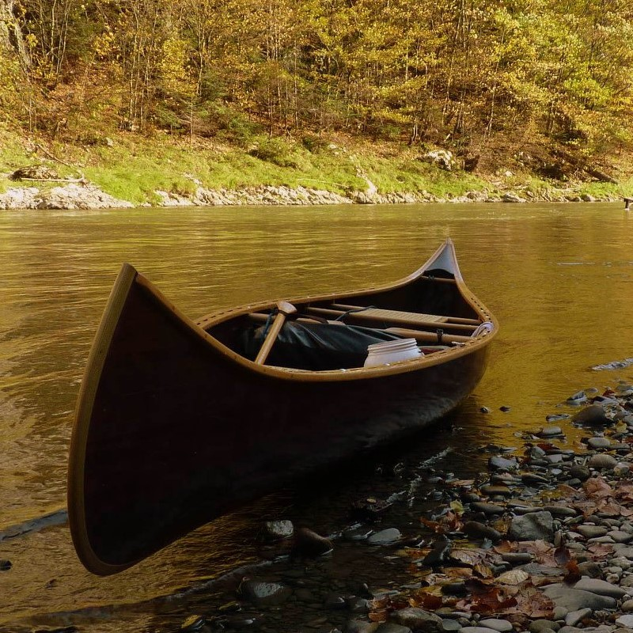

Historia żaglowców cz.1
Łodzi wiosłowych nikomu chyba nie trzeba przedstawiać, większość z nas pływała kajakiem lub iPierwsze łodzie wiosłowe były wydrążonymi kłodami drewna. Łódź ze skór budowano pokrywając skórami zwierzęcymi drewniany szkielet łódki. Kajaki indiańskie mają poszycie chroniące przed wodą zrobione ze skór fok. Indianie amerykańscy robili canoe z kory. Canoe różnią się od innych łódek wagą, gdyż są lekkie i można je przenosić lądem. W obecnych czasach do budowy canoe używa się innych (w większości sztucznych) materiałów, lecz kształt współczesnych kajaków pochodzi od dawnych indiańskich canoe budowanych z kory.
W tych łodziach używany jest napęd wiosłowy, często za pośrednictwem umieszczonych symetrycznie po obu burtach dulek lub z ręki. Ponadto, na niektórych łodziach można wiosłować pojedynczym wiosłem, o ile jednostka jest wyposażona w uchwyt do wiosła na rufie. Jest to tzw. wiosłowanie na śrubkę
Zazwyczaj wiosło jest wykonane z drewna, tworzyw sztucznych, lekkich stopów metali lub kombinacji tych materiałów. Ze względu na budowę wiosła dzieli się na: jednopiórowe (szalupowe); jednopiórowe (pagaj, kanadyjskie); dwupiórowe – kajakowe; pychowe (z okutym piórem).